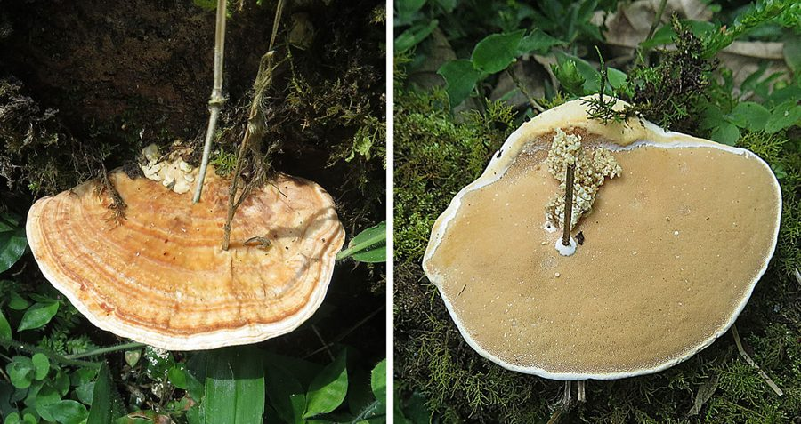

क्यूबन ब्रैकेटCuban Bracket
Trametes cubensis · Polyporaceae · FNG-0049

- Scientific name वैज्ञानिक नाम
- Trametes cubensis (Mont.) Sacc.
- Family कुल
- Polyporaceae
- Hindi हिंदी
- क्यूबन ब्रैकेट
- Local names स्थानीय नाम
- cuban bracket, kyuban bracket, safed lakdi fafund
- Status here यहाँ की स्थिति
- native
- Movement आवागमन
- Resident, here all year
- Known from कहाँ दर्ज
- Others have published records from the wider Awadh–Purvanchal plain, none yet from Basti–Ayodhya अवध–पूर्वांचल से दूसरों के प्रकाशित अभिलेख, बस्ती–अयोध्या से अभी नहीं
- IUCN IUCN
- not evaluated
- Review समीक्षा
- not yet reviewed
When to look कब देखें
Present all year. साल भर मौजूद।
क्यूबन ब्रैकेट / Cuban Bracket
Trametes cubensis (Mont.) Sacc. — Polyporaceae
क्यूबन ब्रैकेट — चौड़ी पत्ती वाले पेड़ों के मृत तनों तथा गिरी हुई लकड़ियों पर उगने वाला एक मजबूत, सफेद से हल्के बादामी रंग का ब्रैकेट कवक। सूखी लकड़ियों पर यह अर्धचंद्राकार या पंखे जैसी आकृति में उगता है। इसकी ऊपरी सतह चिकनी से हल्की मखमली होती है और निचली सतह पर बारीक गोल छिद्र होते हैं। यह कवक लकड़ी के कठोर रेशों को सड़ाकर जंगल की मिट्टी को उपजाऊ बनाता है।
Quick Identification त्वरित पहचान
| Feature | Description |
|---|---|
| Growth form | Annual to biennial bracket, sessile, dimidiate, broadly attached to substrate |
| Bracket shape | Fan-shaped to semicircular, flat or slightly convex, solitary or tiered |
| Texture | Leathery when fresh, drying rigid, lightweight, and tough-corky |
| Upper surface aspect | Smooth to finely velutinous, faintly zonate or azonate, occasionally concentrically sulcate |
| Upper coloration | Chalky white, cream, pale straw-yellow, darkening to dull tan with age |
| Margin | Thick, rounded, even or slightly undulating, fertile below, white |
| Pore surface | White, cream to pale ochre; pores circular to round-angular |
| Wood decay | Induces active white rot, softening and bleaching broadleaf hardwood |
Field tip: Look on dead fallen logs or old tree stumps along canal banks during late monsoon. A sturdy, chalky-white or pale cream bracket with a smoothish upper surface, a thick rounded margin, and tiny round pores beneath is characteristic of Trametes cubensis.
हिंदी — कैसे पहचानें: पेड़ की सूखी लकड़ी पर उगा सफेद या मटमैला ब्रैकेट कवक। ऊपर से चिकना या हल्का मखमली और नीचे से सफेद बारीक छेदों वाला।
Morphology आकारिकी
Trametes cubensis is characterized by robust bracket basidiocarps with trimitic hyphal construction and typical polypore micromorphology:
- Basidiocarp: Sessile, dimidiate, flabelliform, applanate to slightly ungulate; broadly attached to woody hosts; solitary or growing in small overlapping imbricate groups; leathery-corky when fresh, drying rigid and firm.
- Upper surface: Glabrous to very finely tomentose, azonate to indistinctly concentrically furrowed, smooth or radially rugulose; colour uniform white, cream, straw-coloured to light brownish-tan with age; without a distinct dark resinous crust.
- Margin: Entire, thick, blunt, rounded, concolorous with the pileus, sterile on the narrowest border.
- Hymenophore: Poroid; pore surface white to pale cream, turning pale ochraceous upon drying; pores round to slightly angular, uniform, thick-walled; tubes single-layered, distinct from the context.
- Context: Pure white to pale cream, corky, firm, homogeneous, lacking a dark cuticular zone.
- Hyphal system: Trimitic, composed of clamped thin-walled generative hyphae, dominant thick-walled unbranched skeletal hyphae, and intricately branched binding hyphae.
- Basidiospores: Cylindrical, hyaline, smooth, thin-walled, non-amyloid.
हिंदी: यह कवक लकड़ी पर अर्धचंद्राकार या पंखे जैसी आकृति में उगता है। इसका ऊपरी हिस्सा सफेद या हल्का बादामी और चिकना होता है। नीचे की सतह पर बारीक गोल छेद होते हैं जिनसे बीजाणु निकलते हैं।
Ecology and Substrate पारिस्थितिकी और आधार
Trametes cubensis is an efficient saprotrophic decayer of dead hardwood timber in tropical and subtropical regions:
- Host trees: Colonizes dead fallen trunks, large boughs, and decaying stumps of broadleaf trees. No source opened for this profile names the trees it uses in the Awadh region.
- Decay mechanism: Causes a fibrous white rot by simultaneously metabolizing lignin and cellulose, leaving bleached, stringy, crumbly wood residue.
- Moisture and light: Thrives in partially shaded woodland understories, canal-side tree belts, and timber yards where moisture persists beneath bark.
- Drought resilience: The corky basidiocarp resists desiccation during hot dry weather, reviving spore production following monsoon rehydration.
हिंदी: यह कवक चौड़ी पत्ती वाले पेड़ों की सूखी और गिरी हुई लकड़ियों पर फलता-फूलता है। यह लकड़ी के भीतरी हिस्से को सड़ाकर भुरभुरा बना देता है। गर्मी के दिनों में सूख जाने पर भी यह नष्ट नहीं होता और बारिश में फिर हरा-भरा हो जाता है।
Life Cycle / Phenology जीवन चक्र
The bracket persists through changing seasons, maintaining an extended cycle of reproductive viability:
| Season | Developmental Stage | Forest and Wood Habitat Context |
|---|---|---|
| Monsoon | Active vegetative hyphal growth inside logs; basidiocarps expand rapidly from wood bark | Saturated timber logs and high humidity stimulate basidiocarp emergence |
| Late Monsoon | Hymenial tubes actively release microscopic airborne basidiospores | Peak sporulation period; spores disperse into woodland air currents |
| Post-Monsoon | Bracket growth stabilizes; margins harden into a tough corky barrier | Decreasing rainfall; fungal structure assumes persistent dry state |
| Winter | Mature brackets persist dormant on fallen trunks throughout cool sunny months | Stable bracket morphology; minimal vegetative activity |
| Summer | Basidiocarps dry out completely, withstanding high ambient temperatures | Extreme heat; mycelium remains dormant inside protective hardwood log |
हिंदी: बरसात के दिनों में नम लकड़ी में से यह नया छत्ता निकालता है। भादों के महीने में इसके छिद्रों से बीजाणु उड़कर आसपास की लकड़ियों पर बैठते हैं। जाड़े और गर्मी में यह कड़े छत्ते के रूप में लकड़ी से चिपका रहता है।
Associated Species and Decay Role सहजीवी प्रजातियाँ और अपघटन
Trametes cubensis functions as a primary recycling agent within regional forest stands:
- Host species: Decays fallen timber of broadleaved trees; which of Awadh's trees it uses is a question for the field (Research Questions). Other white-rot polypores of dead hardwood in the atlas are the Scabrous Porecrust and the Thin-walled Maze Polypore.
- Fungal interactions: Co-occurs with other wood-decay polypores like Ganoderma and Phellinus, partitioning dead log substrates based on moisture and decay state.
- Invertebrate habitat: Internal corky tissues provide feeding galleries and pupation chambers for specialist fungus-dwelling tenebrionid beetles and ciid beetles.
- Carbon cycling: Breaks down recalcitrant lignocellulosic wood polymers, returning bioavailable organic carbon to the forest soil food web.
हिंदी: यह कवक पेड़ों की सूखी लकड़ियों को नष्ट कर जंगल की जमीन साफ रखने में मदद करता है। इसके पुराने छत्तों के भीतर नन्हे भृंग और कीड़े अपने रहने के लिए सुरंगें बनाते हैं।
Agricultural / Human Relevance कृषि प्रासंगिकता
Trametes cubensis has dual relevance in managed agro-forestry and forestry environments:
- Timber degradation: Degrades felled logs, structural timbers, and bridge supports left untreated in open timber depots and damp construction sites.
- Ecological benefit: Vital agent in natural woodland sanitization, dismantling bulky fallen hardwood debris that would otherwise choke forest floors.
- Biotechnology potential: Lignin-degrading oxidative enzymes produced by the fungus are of research interest for industrial biopulping and dye decolorization.
- Preventive practices:
- Keep commercial timber stored in well-ventilated dry yards, elevated off the bare soil.
- Apply protective seasoning and timber treatments to wood intended for outdoor construction.
- Remove infected fallen logs from timber storage yards to reduce regional basidiospore loads.
हिंदी: खुले में रखी इमारती लकड़ी या बल्लियों पर यह कवक लग जाए तो लकड़ी सड़कर कमजोर हो जाती है। लकड़ी को जमीन से उठाकर सूखी जगह पर रखना और उस पर रोगरोधी लेप लगाना ही इसके बचाव का उपाय है।
Expected Locally स्थानीय रूप से अपेक्षित
Not a field record. Written from published accounts for eastern Uttar Pradesh. No confirmed local sighting yet — if you have seen it, that is what the atlas needs.
अभी तक स्थानीय पुष्टि नहीं। यह विवरण प्रकाशित स्रोतों से है, किसी अवलोकन से नहीं।
GBIF holds published records from the wider Awadh–Purvanchal plain, none yet from Basti–Ayodhya. In Awadh, the species is expected on dead fallen hardwood logs in village woodlots, canal plantations, riparian tree belts, and old timber storage areas during the monsoon. A confirmed first record requires a clear photograph with place and date submitted through the project portal.
हिंदी: अवध के बागों, नहर की पटरियों और लकड़ी के टालों में पड़े पुराने लट्ठों पर यह कवक मिलने की पूरी संभावना है। पुष्टि के लिए सफेद छत्ते की स्थान और तारीख सहित स्पष्ट तस्वीर भेजें।
Distribution वितरण
Global range: Widespread in tropical and subtropical regions of the Americas, Asia, and Africa.
In India: Recorded from tropical deciduous forest tracts and woodlands across peninsular and northern India (Bilgrami et al. 1979).
In Uttar Pradesh: Present on dead wood in plantations, canal belts, and riverine woodlands.
In Basti district / eastern UP: Expected on fallen hardwood timber, stumps, and woodlots across the district.
हिंदी: यह कवक अमेरिका, एशिया और अफ्रीका के गर्म और नम जंगलों में पाया जाता है। उत्तर प्रदेश के मैदानी इलाकों से भी इसके रिकॉर्ड हैं।
Research Questions शोध प्रश्न
- What is the decay rate of Trametes cubensis on fallen hardwood compared to Earliella scabrosa under Gangetic climatic conditions?
- How long do basidiocarps remain sporulating when subject to prolonged dry spells during the post-monsoon period? / क्या पझड़ के बाद शुष्क मौसम में भी इस कवक के ब्रैकेट से बीजाणु निकलते रहते हैं?
- What are the primary insect beetle taxa associated with sporocarp consumption in regional woodlots?
- On the dead wood of which trees does Trametes cubensis grow in Awadh's groves and plantations? / अवध में यह कवक किन पेड़ों की सूखी लकड़ी पर उगता है?
- What industrial potential do its laccase enzymes exhibit in degrading agricultural pesticide effluents?
Similar Species मिलती-जुलती प्रजातियाँ
| Species | Upper Surface Colour | Margin | Spore Shape |
|---|---|---|---|
| Trametes cubensis | White to pale straw, azonate | Thick, rounded, blunt | Cylindrical |
| Trametes hirsuta | Greyish with distinct concentric hairy zones | Thin, acute | Cylindrical |
| Trametes gibbosa | White to greyish, distinctly bumpy/gibbous | Thick, wavy | Cylindrical |
Field rule: Look at the smooth pale surface and thick rounded edge: a chalky-white to cream bracket with a non-hairy top, a thick blunt margin, and round pores identifies Trametes cubensis, distinguishing it from hirsute or zoned lookalikes.
हिंदी: चिकनी सफेद या बादामी ऊपरी सतह और मोटा गोल किनारा इस कवक की पहचान है। ट्रामेटीस हिरसुटा की सतह पर रोएँदार पट्टियाँ होती हैं जो इसमें नहीं पाई जातीं।
Taxonomy & Classification वर्गीकरण
Original description. Originally described as Polyporus cubensis by Jean Pierre François Camille Montagne in 1837 from Cuban collections and transferred to Trametes by Pier Andrea Saccardo in 1891 in his Sylloge Fungorum (9, p. 198).
Subspecies. Monotypic — no subspecies are currently recognised.
Family and order placement. Belongs to the family Polyporaceae in the order Polyporales, class Agaricomycetes, phylum Basidiomycota.
Phylogenetic notes. Placed within Trametes based on trimitic hyphal system, non-pigmented context, and poroid hymenophore producing smooth cylindrical spores.
IUCN status rationale. Not evaluated globally by the IUCN Red List. It is an abundant, widespread wood-decay bracket fungus with no conservation concerns.
हिंदी: इस कवक का वैज्ञानिक वर्गीकरण 1891 में पियर सैकार्डो द्वारा ट्रामेटीस वंश में किया गया। यह बेसिडिओमाइकोटा प्रभाग का सदस्य है और प्रकृति में सुरक्षित है।
Photo Gallery फोटो गैलरी
No photos yet — add field photos to media/species/cuban_bracket/ and run node scripts/sync_photos.js.
Photos needed आवश्यक फोटो
- [ ] Fan-shaped white bracket of Trametes cubensis on fallen hardwood log (लकड़ी पर उगा सफेद काष्ठ कवक)
- [ ] Upper pileus view showing smooth cream to straw-coloured surface (ऊपरी चिकनी सतह)
- [ ] Poroid underside showing round, regular pore mouths (निचली सतह के गोल रंध्र)
References संदर्भ
- Saccardo, P. A. (1891). Sylloge Fungorum, 9, p. 198.
- Bilgrami, K. S., Jamaluddin & Rizwi, M. A. (1979). The Fungi of India, Part I. Today & Tomorrow's Printers & Publishers, New Delhi.
- GBIF Occurrence Data — Trametes cubensis, India (2025).
Source file: species/fungi/bracket_fungi/cuban_bracket.md